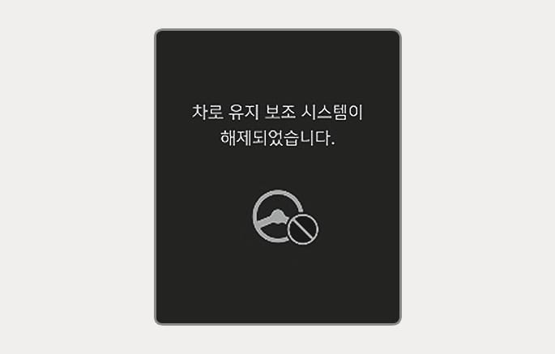
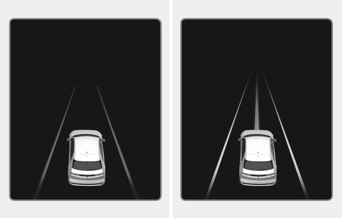

기능 경고 및 제어
양쪽 차선 또는 선행 차량을 인식하고 차량의 속도가 180 km/h 이하인 경우 차로 중앙을 유지하며 주행하도록 조향을 도와줍니다. 클러스터에
조향을 보조 하지 않을 때는
핸즈오프 경고

2C_HandOffWarning
일정 시간 동안 스티어링 휠을 잡지 않으면 단계적으로 핸즈오프 경고문이 표시되고 경고음이 울립니다.
-
1단계: 경고문 "핸들을 잡으십시오" 표시
-
2단계: 경고문 (빨간색 스티어링 휠) 표시 및 경고음 울림
차로 유지 보조 해제

2C_DisableLFAWarning
계속해서 스티어링 휠을 잡지 않으면, 경고문 "차로 유지 보조 시스템이 해제되었습니다." 표시와 함께 차로 유지 보조가 꺼집니다.
-
차로 유지 보조가 작동 중일 때 스티어링 휠을 고정하거나 일정 수준 이상으로 조작할 경우 조향을 보조하지 않을 수 있습니다.
-
차로 유지 보조는 모든 상황에서 작동하지는 않습니다. 항상 스티어링 휠을 잡고 주행하십시오.
-
주행 상황에 따라 핸즈오프 경고문이 늦게 표시될 수 있습니다. 항상 스티어링 휠을 잡고 주행하십시오.
-
장갑을 착용하거나 스티어링 휠을 약하게 잡으면 잡지 않은 것으로 판단하여 핸즈오프 경고문이 표시될 수 있습니다.
-
스티어링 휠에 물체를 붙일 경우 핸즈오프 경고문이 정상적으로 표시되지 않을 수 있습니다.
-
차선이 인식되면 클러스터에 차선 색상이 회색에서 흰색으로 바뀝니다.
차선 미인식 상태/차선 인식 상태
2C_LaneDetectionInfo
-
차선이 인식되지 않으면 선행 차량의 유무와 주행 상태에 따라 조향을 제한적으로 보조할 수 있습니다.
-
차로 유지 보조가 작동 중이어도 스티어링 휠을 직접 조작하여 조향을 제어할 수 있습니다.
-
차로 유지 보조가 조향을 보조할 때는 스티어링 휠이 무겁거나 가볍게 느껴질 수 있습니다.